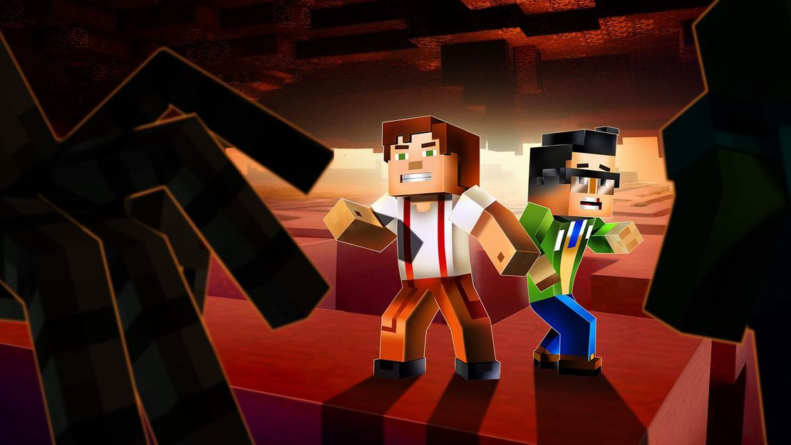

Question 8
When leading your team, how do you approach unforeseen obstacles?
I bring quirky, creative solutions that empower everyone
I buzz around collaboratively, ensuring every detail is addressed
I weave strategic plans to navigate and overcome challenges
I keep pushing forward relentlessly, solving problems step by step
Back
Next